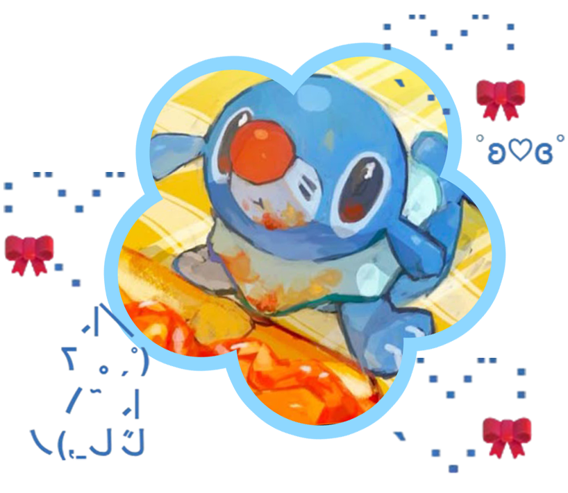
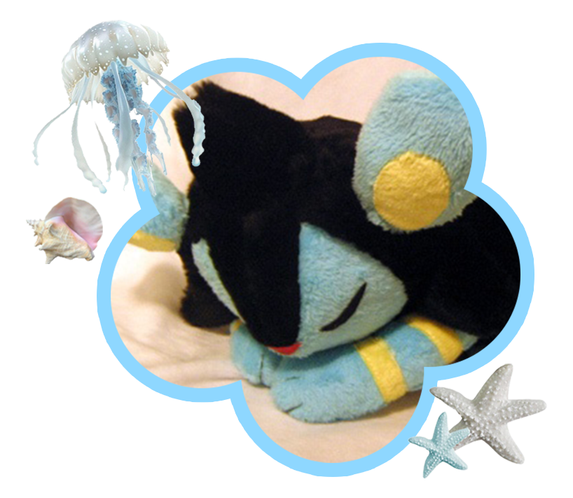

⊹ ࣪ ﹏𓊝﹏𓂁﹏﹏﹏𓂁﹏﹏﹏𓂁﹏﹏﹏𓂁﹏﹏𓊝﹏﹏𓂁﹏﹏﹏⊹ ࣪ ˖
Serafina Livia Wardhana
⋆｡𖦹 ˚ 𓇼 ˚｡⋆ ｡𖦹 ˚ 𓇼 ˚｡⋆ ｡𖦹 ˚ 𓇼 ˚｡⋆ ｡𖦹 ˚ 𓇼 ˚｡⋆ ｡𖦹 ˚ 𓇼 ˚｡⋆
Hobi baca manga & manhwa, main game, menggambar, tidur
Bahasa inggris, indonesia
Keahlian ui/ux design
⋆｡ ─────────────────── ⋆｡𖦹 ˚ 𓇼 ˚｡ Aktivitas Terakhir ⋆｡𖦹 ˚ 𓇼 ˚｡ ─────────────────── ｡⋆
Staff PDD KPUFS 2025
Tanggal: 3-5 November 2025
Bekerja sama dengan koordinator divisi dan staff PDD (Publikasi, Desain, dan Dokumentasi) lain untuk menangani dokumentasi dan publikasi seluruh rangkaian KPUFS 2025. Tugas yang dikerjakan mencakup pembuatan konten Instagram, banner, dan overlay untuk live report. Pada hari-h acara melakukan live report per mata acara.

Bekerja sama dengan koordinator divisi dan staff PDD (Publikasi, Desain, dan Dokumentasi) lain untuk menangani dokumentasi dan publikasi seluruh rangkaian KPUFS 2025. Tugas yang dikerjakan mencakup pembuatan konten Instagram, banner, dan overlay untuk live report. Pada hari-h acara melakukan live report per mata acara.